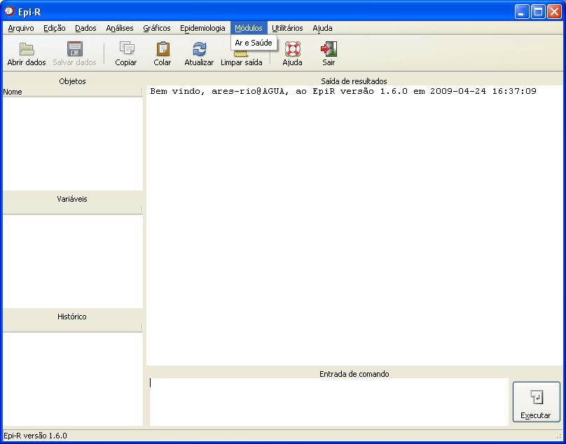
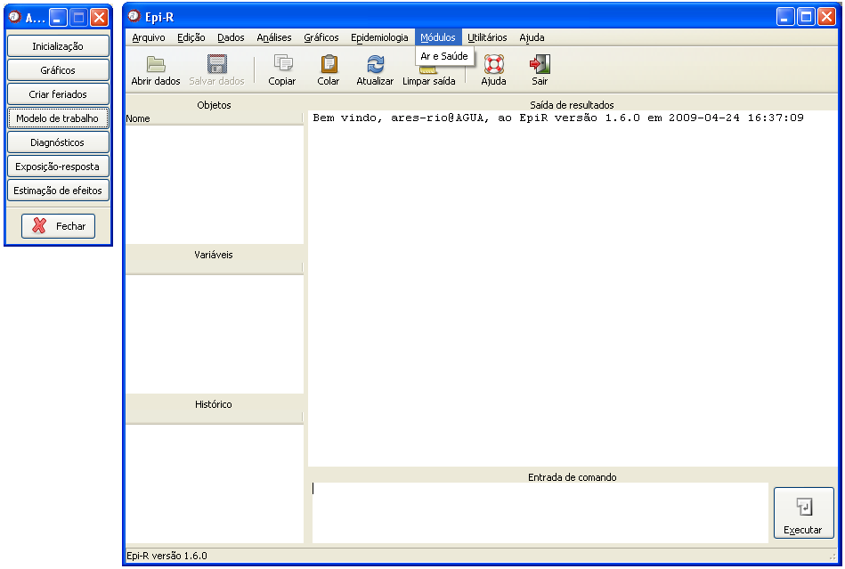

Menu Módulos
Menu Módulos

Figura 1. Janela principal do Epi-R destacando a opção do menu Módulo.
No momento, o Epi-R disponibiliza um módulo de análise de dados em estudos de poluição e saúde. Para acessar o módulo, clique no menu Módulo

Figura 2. Barra de ferramentas do módulo Ar e Saúde.
Para iniciar a utilização do módulo, clique em Inicialização.
Durante toda a sessão do Epi-R em que o módulo estiver sendo utilizado, a barra de ferramentas ficará aparecendo, para que seja possível acessar todas as suas funções. Clique no link desejado para obter maiores informações.
Gráficos
Criar feriados
Modelo de trabalho
Diagnósticos
Exposição-resposta
Estimação de efeitos
Uma vez encerrada a análise, clique no botão Fechar da barra de ferramentas para que as demais funções do Epi-R voltem a ser habilitadas para uso.
Durante toda a sessão do Epi-R em que o módulo estiver sendo utilizado, a barra de ferramentas ficará aparecendo, para que seja possível acessar todas as suas funções. Clique no link desejado para obter maiores informações.
Gráficos
Criar feriados
Modelo de trabalho
Diagnósticos
Exposição-resposta
Estimação de efeitos
Uma vez encerrada a análise, clique no botão Fechar da barra de ferramentas para que as demais funções do Epi-R voltem a ser habilitadas para uso.